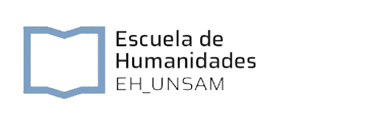
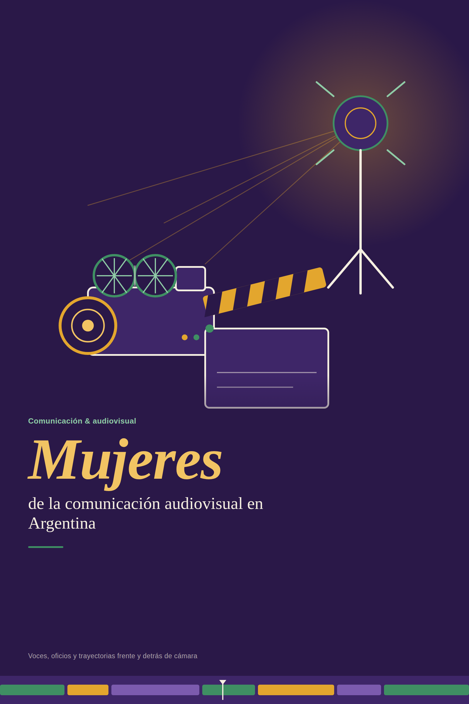

Introducción
Proceso de investigación, metodología y notas de campo.

Testimonios de mujeres de la comunicación audiovisual en Argentina
Etiqueta 1
Esta plataforma reúne, en clave de archivo abierto, las voces de mujeres que hicieron y hacen comunicación audiovisual en Argentina: pioneras, referentes contemporáneas y las nuevas generaciones que investigan, producen y enseñan. Nace como trabajo colectivo de cátedra y se piensa para crecer después de esta entrega — cada sección deja espacio para lo que todavía falta cargar.
El proyecto se organiza en cuatro ejes que conviven en esta misma plataforma: un inventario de voces con mapa interactivo, la propuesta editorial de un libro colectivo, el registro de presentaciones y actividades académicas, y una sección de trabajos realizados por estudiantes. La dirección académica está a cargo de la Dra. Gabriela Cicalese.
Etiqueta 2
Base de datos de referentes de la comunicación audiovisual, organizada por zona geográfica y línea temática. Los datos se cargan y consultan desde Supabase; mientras se completa el inventario definitivo, esta vista muestra fichas de referencia.
Cargando inventario…
Etiqueta 3
Identidad gráfica y estructura de la publicación colectiva. La tapa propone una composición tipográfica sobria, con superposición de nombres de autoras e investigadoras en marca de agua dinámica — pluralidad y red antes que jerarquía individual.

Proceso de investigación, metodología y notas de campo.
Tecnología, ética, labor periodística y experiencias de trabajo, a partir de lo que aparece en las entrevistas.
Semblanzas escritas de las referentes entrevistadas.
Sección libre — todavía sin definir.
Etiqueta 4
Sistematización de talleres, conversatorios y presentaciones académicas del proyecto. Incluye eventos ya realizados y espacio abierto para los que ocurrirán antes de la publicación del sitio — y para los que se sumen durante 2027.
Videos y documentos vinculados a los ejes temáticos, entrevistas, conversatorios y observatorio del proyecto.
Etiqueta 5
Producciones realizadas en el marco de la cátedra, organizadas por tipo de trabajo. El orden de cada listado respeta la selección docente — quien navega puede empezar por el primero de cada categoría y seguir en orden.
Piezas audiovisuales breves y microdocumentales producidos por los grupos de trabajo.
Trabajos escritos de análisis e investigación, en formato PDF de hasta 3 páginas.
Semblanzas escritas de referentes del inventario de voces, en elaboración paralela.